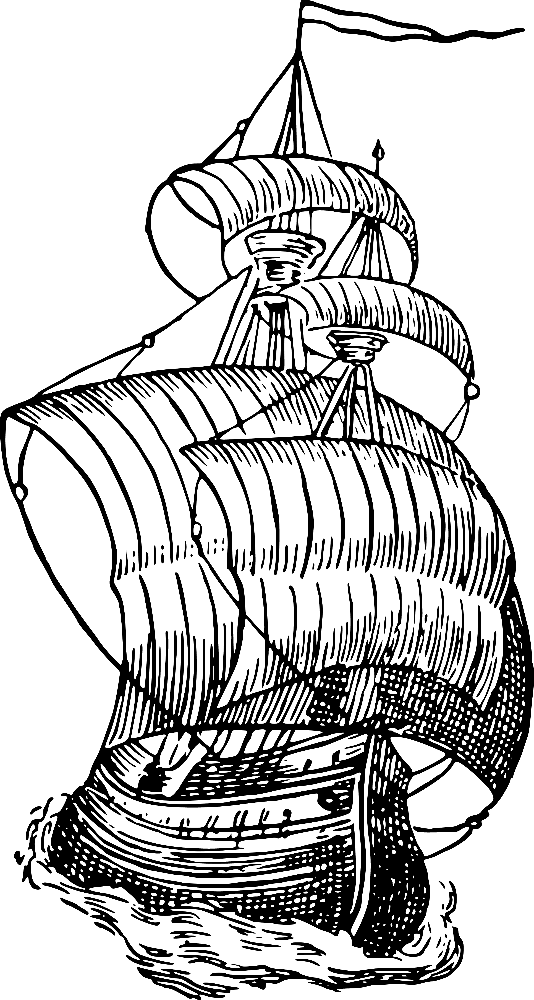
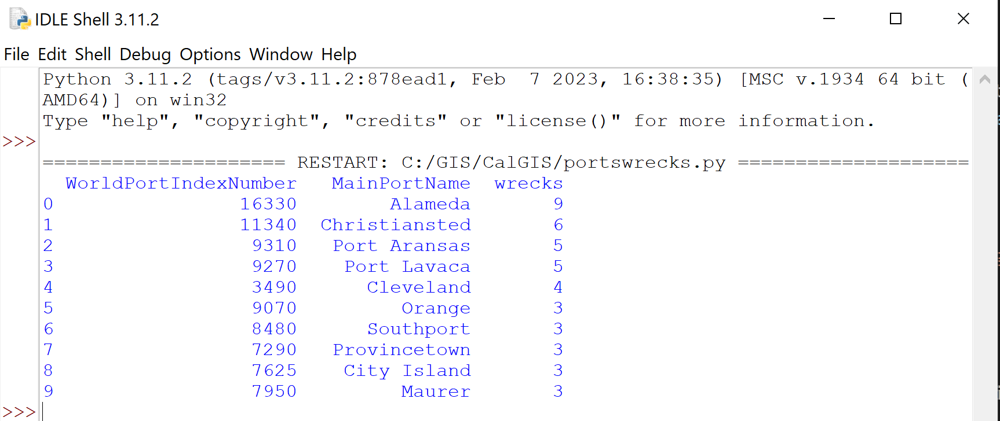
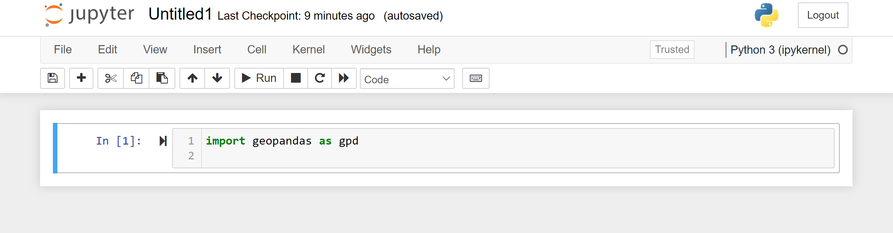

Using Python with Geospatial Data: Overview of Tools
Topics
- Field calculation in QGIS and ArcGIS Pro
- Python scripts accessing Geospatial tools
- Jupyter Notebooks
Learning Objectives
- How to access tools for using Python with GIS data
- Where to find resources for configuration and troubleshoot common issues
- How to create a shareable Jupyter Notebook
- Tips for determining when to use Python
Workshop General Info
- We'll have 3, 10-min breaks, but feel free to step out anytime you need to.
- We'll allow time for you to follow along on examples.
- Anytime we pause, feel free to talk through the example with your neighbor.
- Please ask questions!
Why is Python so awesome for geospatial?
- Approachable programming language
- Many spatial libraries
- Integrated with GIS software
- Open source & free
- Cross-platform compatibility
Agenda
- Getting started
- Python within desktop GIS
- Standalone Python
- Jupyter Notebooks
- Selecting the right tool
Getting Started
Python Installation
Python 3 comes with ArcGIS Pro and QGIS 3.x (and other software as well).
You can also install a standalone copy: https://www.python.org/downloads/
Check if Python is installed by opening terminal/command prompt and entering:
py --versionor
python --versionPython Versions
You might have multiple versions of Python installed.
That is ok, you just need to be mindful of which libraries are installed on each version.
Packages
Your standard Python install comes with many libraries (reusable code), but you will likely need to add some additional packages.
You can use pip or conda to install new packages.
pip
Check if pip is installed by opening terminal/command prompt and entering:
pip --versionIf you don't see pip, install by entering:
Mac/Linux:
python -m ensurepip --upgradeWindows:
py -m ensurepip --upgradeconda
You are less likely to have conda already installed than pip. Conda is beneficial because it does well handling dependencies.
It also can be troublesome with multiple installs.
Check your install by opening Terminal/Command and typing:
conda listDo not mix conda and pip installs!
Common Issue
If you can't find Python or pip, but know it is installed, they may not be entered into PATH.

PATH: Windows
- Search for Path and click Edit the System Environment Variables.
- Click on the Environment Variables button on the bottom right.
- In the System variables section, select the Path variable and click Edit. The next screen will show all the directories that are currently a part of the PATH variable.
- Click on New and enter your Python install directory.
PATH: Mac/Linux
- Open your bash file.
Linux: Open .bashrc from your Home directory in text editor.
Mac:
vi .bash_profile Scroll to the bottom and enter the following on a new line, then save.
export PATH="$PATH:/usr/local/bin/python"(adjust your path if you installed in a different location)
PATH settings from Command
If your computer is very restricted and you can't edit PATH, you can temporarily set it in Terminal/Command.
Mac/Linux:
export PATH="$PATH:/usr/local/bin/python"Windows:
set PATH=C:\Program Files\Python 3.7;%PATH%Python within Desktop GIS
A Pirate's Life for Me
Monterey is known as the site of the only pirate attack in California history.
History
Hipolito Bouchard was a privateer (i.e. government sanctioned pirate) who attacked Monterey in 1818.
Read more about his exploits here: Monterey Historical Society or a colorful essay here: Monterey County Weekly
ü襂Äç‚ò†Ô∏è Data
Today you will be a pirate!
Well be working with several nautical datasets:
- World Ports: NGA
- Shipwrecks: NOAA
- Pirate Attacks: NGA
- High Seas: Flanders Marine Institute
Data Formats
Data for QGIS users is in the geopackage.
Data for ArcGIS Pro users is in the geodatabase.
(ArcGIS Pro is very limited in Geopackage functionality)
Data Cleanup
Let's remove some pesky parenthesis in the field names.
QGIS
Open the Python console inside QGIS desktop. Click on the Show Editor button to add your script.
QGIS
Add World_Ports from the geopackage.
Select the World_Ports layer in the Layers list and then copy and paste this script into the Python Console Editor. Click Run.
layer = iface.activeLayer()
layer.startEditing()
for field in layer.fields():
if field.name().endswith('(m)'):
idx = layer.fields().lookupField(field.name())
new_name = field.name()[:-4]
layer.renameAttribute(idx, new_name)
layer.commitChanges()
print("done")Break it Down
This script remove the "(m)" from field names. The parenthesis seemed to cause a problem with field calculations.
Break it Down
First we indicate this function will be performed on the active layer and start editing it in-place.
layer = iface.activeLayer()
layer.startEditing()
for field in layer.fields():
if field.name().endswith('(m)'):
idx = layer.fields().lookupField(field.name())
new_name = field.name()[:-4]
layer.renameAttribute(idx, new_name)
layer.commitChanges()Break it Down
Next we loop through all the fields in the layer.
layer = iface.activeLayer()
layer.startEditing()
for field in layer.fields():
if field.name().endswith('(m)'):
idx = layer.fields().lookupField(field.name())
new_name = field.name()[:-4]
layer.renameAttribute(idx, new_name)
layer.commitChanges()Break it Down
Then we look for fields that end with (m)
layer = iface.activeLayer()
layer.startEditing()
for field in layer.fields():
if field.name().endswith('(m)'):
idx = layer.fields().lookupField(field.name())
new_name = field.name()[:-4]
layer.renameAttribute(idx, new_name)
layer.commitChanges()Break it Down
We assign the existing field name to a variable and create a 2nd variable to hold the new field name which is the old minus the last 4 characters.
We then rename the field by using these variables.
layer = iface.activeLayer()
layer.startEditing()
for field in layer.fields():
if field.name().endswith('(m)'):
old_name = layer.fields().lookupField(field.name())
new_name = field.name()[:-4]
layer.renameAttribute(old_name, new_name)
layer.commitChanges()Break it Down
Finally, we save our edits.
layer = iface.activeLayer()
layer.startEditing()
for field in layer.fields():
if field.name().endswith('(m)'):
old_name = layer.fields().lookupField(field.name())
new_name = field.name()[:-4]
layer.renameAttribute(old_name, new_name)
layer.commitChanges()QGIS
Because ArcGIS Pro is very sensitive, I also cleaned up the field names to make them exportable to geodatabase.
import re
layer = iface.activeLayer()
layer.startEditing()
for field in layer.fields():
idx = layer.fields().lookupField(field.name())
new_name = re.sub(r'[^0-9A-za-z]','',field.name())
layer.renameAttribute(idx, new_name)
layer.commitChanges()
print("done")Regular Expressions
Regular Expressions (or regex for short) are handy ways to match/search.
Like Python, there are lots of free resources to learn such as: https://regexr.com/
import re
layer = iface.activeLayer()
layer.startEditing()
for field in layer.fields():
idx = layer.fields().lookupField(field.name())
new_name = re.sub(r'[^0-9A-za-z]','',field.name())
layer.renameAttribute(idx, new_name)
layer.commitChanges()Here we remove everything that isn't a number or letter.
ArcGIS
Open the Python console inside ArcGIS Pro.

ArcGIS
Add World_Ports from the geodatabase.
Select your World_Ports layer in the Layers list and then copy and paste this script into the Python Console Editor. Press enter twice to run.
fc = 'World_Ports'
fieldList = arcpy.ListFields(fc)
for field in fieldList:
fname = field.name
if 'Communications' in fname:
new_name = fname.replace('Communications', 'Comms')
arcpy.AlterField_management(fc, field.name, new_name,\
new_name)Break it Down
This script finds fields with "Communications" in the name and replaces that text with Comms. There's no particular need to do this (I just wanted an ArcGIS example!).
First we list all the field names in the World_Ports layer.
fc = 'World_Ports'
fieldList = arcpy.ListFields(fc)
for field in fieldList:
fname = field.name
if 'Communications' in fname:
new_name = fname.replace('Communications', 'Comms')
arcpy.AlterField_management(fc, field.name, new_name,\
new_name)Break it Down
Then we loop through all the field names.
fc = 'World_Ports'
fieldList = arcpy.ListFields(fc)
for field in fieldList:
fname = field.name
if 'Communications' in fname:
new_name = fname.replace('Communications', 'Comms')
arcpy.AlterField_management(fc, field.name, new_name,\
new_name)Break it Down
Finally, if we find the word "Communications" we replace it with Comms in both the field name and alias.
fc = 'World_Ports'
fieldList = arcpy.ListFields(fc)
for field in fieldList:
fname = field.name
if 'Communications' in fname:
new_name = fname.replace('Communications', 'Comms')
arcpy.AlterField_management(fc, field.name, new_name,\
new_name)Troubleshooting
Running scripts in the Python window should return errors. However, sometimes the script fails without an error.
Add print commands to better understand where things might be going wrong.
fc = 'World_Ports'
fieldList = arcpy.ListFields(fc)
for field in fieldList:
fname = field.name
print("old name: ",fname)
if 'Communications' in fname:
new_name = fname.replace('Communications', 'Comms')
print("new name: ",new_name)
arcpy.AlterField_management(fc, field.name, new_name,\
new_name)
print("done")Comments
People often don't add comments to small scripts, but it is always a good idea!
If you intend to save the script for later (which you should), a few comments make it easier to understand.
# Select a feature class
fc = 'World_Ports'
# List all the fields in feature class
fieldList = arcpy.ListFields(fc)
# Loop through all the fields
for field in fieldList:
fname = field.name
# Find the word "Communications" in the field name
if 'Communications' in fname:
new_name = fname.replace('Communications', 'Comms')
# In-Place modication of the field name (caution!)
arcpy.AlterField_management(fc, field.name, new_name,\
new_name)
print("done")ü•± Break üïë
Time to step out of the room, stretch, and talk to your neighbor!
Field Calculation
Python can be a good way to do complex field calculations.
In this example, we will add a field called PiratePorts based on attributes of ports that are ideal for our deep draft sailing frigate.
QGIS
Copy this script.
from qgis.core import *
from qgis.gui import *
@qgsfunction(args='auto', group='Custom')
def pirateports(depth, provisions, water, security,\
feature, parent):
depth = float(depth)
if (water =="No" or depth <= 6.0):
return "Avast!"
elif security=="Yes":
return "Avast"
elif (provisions=="Yes" and water=="Yes"):
return "Aye!"
else:
return "Aye"QGIS
Open Field Calculator in QGIS. Add your script to the Function Editor and click Save and Load.
QGIS
Then call your function from the Expression in Field Calculator.
pirateports("Channel Depth", "Supplies - Provisions", "Supplies - Potable Water", "Port Security")Break it Down
This script goes through a few logic steps and assigns a value.
from qgis.core import *
from qgis.gui import *
@qgsfunction(args='auto', group='Custom')
def pirateports(depth, provisions, water, security,\
feature, parent):
depth = float(depth)
if (water =="No" or depth <= 6.0):
return "Avast!"
elif security=="Yes":
return "Avast"
elif (provisions=="Yes" and water=="Yes"):
return "Aye!"
else:
return "Aye"Note the "\" symbol just means a line break to make long lines easier to read.
Break it Down
We import some QGIS libraries.
from qgis.core import *
from qgis.gui import *
@qgsfunction(args='auto', group='Custom')
def pirateports(depth, provisions, water, security,\
feature, parent):
depth = float(depth)
if (water =="No" or depth <= 6.0):
return "Avast!"
elif security=="Yes":
return "Avast"
elif (provisions=="Yes" and water=="Yes"):
return "Aye!"
else:
return "Aye"Break it Down
Then we define a name for our function and assign the inputs to variables. QGIS needs the feature and parent variables even though we don't supply them when we run the expression.
from qgis.core import *
from qgis.gui import *
@qgsfunction(args='auto', group='Custom')
def pirateports(depth, provisions, water, security,\
feature, parent):
depth = float(depth)
if (water =="No" or depth <= 6.0):
return "Avast!"
elif security=="Yes":
return "Avast"
elif (provisions=="Yes" and water=="Yes"):
return "Aye!"
else:
return "Aye"Break it Down
In order to do math, we let it know depth is decimal. We need access to fresh water and at least 6m depth for our ship.
If a port doesn't have those essentials, it is a definite no (Avast!).
from qgis.core import *
from qgis.gui import *
@qgsfunction(args='auto', group='Custom')
def pirateports(depth, provisions, water, security,\
feature, parent):
depth = float(depth)
if (water =="No" or depth <= 6.0):
return "Avast!"
elif security=="Yes":
return "Avast"
elif (provisions=="Yes" and water=="Yes"):
return "Aye!"
else:
return "Aye"Break it Down
Since we are pirates, having port security isn't ideal.
These are a soft no (Avast).
from qgis.core import *
from qgis.gui import *
@qgsfunction(args='auto', group='Custom')
def pirateports(depth, provisions, water, security,\
feature, parent):
depth = float(depth)
if (water =="No" or depth <= 6.0):
return "Avast!"
elif security=="Yes":
return "Avast"
elif (provisions=="Yes" and water=="Yes"):
return "Aye!"
else:
return "Aye"Break it Down
It would be nice to restock our stores and get water at the same time.
These ports are a hearty yes (Aye!).
from qgis.core import *
from qgis.gui import *
@qgsfunction(args='auto', group='Custom')
def pirateports(depth, provisions, water, security,\
feature, parent):
depth = float(depth)
if (water =="No" or depth <= 6.0):
return "Avast!"
elif security=="Yes":
return "Avast"
elif (provisions=="Yes" and water=="Yes"):
return "Aye!"
else:
return "Aye"Break it Down
Finally if we haven't eliminated the port or confirmed it is a great option, it is a soft yes (Aye).
from qgis.core import *
from qgis.gui import *
@qgsfunction(args='auto', group='Custom')
def pirateports(depth, provisions, water, security,\
feature, parent):
depth = float(depth)
if (water =="No" or depth <= 6.0):
return "Avast!"
elif security=="Yes":
return "Avast"
elif (provisions=="Yes" and water=="Yes"):
return "Aye!"
else:
return "Aye"ArcGIS
Copy this code.
def pirateports(depth, provisions, water, security):
depth = float(depth)
if (water =="No" or depth <= 6.0):
return "Avast!"
elif security=="Yes":
return "Avast"
elif (provisions=="Yes" and water=="Yes"):
return "Aye!"
else:
return "Aye"ArcGIS
Open the attribute table and click Calculate Field. Add your script to Code Block and your function to Expression and Apply.
pirateports(!ChannelDepth!,!SuppliesProvisions!,!SuppliesPotableWater!,!PortSecurity!)Break it Down
See QGIS section, unlike tools/algorithms, Python logic is exactly the same between the two softwares.
The only difference is we don't need feature & parent and we add ! instead of " to the field names in the expression.
def pirateports(depth, provisions, water, security):
depth = float(depth)
if (water =="No" or depth <= 6.0):
return "Avast!"
elif security=="Yes":
return "Avast"
elif (provisions=="Yes" and water=="Yes"):
return "Aye!"
else:
return "Aye"pirateports(!ChannelDepth!,!SuppliesProvisions!,!SuppliesPotableWater!,!PortSecurity!)ü•± Break üïë
Time to step out of the room, stretch, and talk to your neighbor
Standalone Python
Why Standalone?
Standalone Python scripts are handy if you need it to run without opening desktop software.
They are also used for integrating many different types of applications and making your own application.
Python for Spatial
There are many spatial libraries for Python outside of those associated with ArcGIS and QGIS. Here are just a few:
- GDAL
- OGR
- GeoPandas
- Folium
- LasPy
We'll use GeoPandas today.
To Pillage & Plunder
In the upcoming examples we want to find ports with shipwrecks nearby that we can loot.
Using GeoPandas
First, you'll need all the dependencies.
If you've commited to conda, open Terminal/Command and enter:
conda install geopandasSkip down if you prefer pip.
Pip Install
You may find you have to troubleshoot and install additional dependent libraries if you use pip. You must install in the following order.
pip install GDALpip install Pyprojpip install Fionapip install Shapelypip install GeoPandas
Write your script
Open IDLE File/New and paste in:
import geopandas as gpd
ports = gpd.read_file('C:/GIS/PirateData.gpkg',layer='World_Ports')
wrecks = gpd.read_file('C:/GIS/PirateData.gpkg',layer='AWOIS_Wrecks')
ports = ports.to_crs(3395)
wrecks = wrecks.to_crs(3395)
ports['geometry'] = ports.buffer(distance = 1000)
joined_data = gpd.sjoin(ports, wrecks)
group = joined_data.groupby(['WorldPortIndexNumber',\
'MainPortName']).size()\
.sort_values(ascending=False)\
.reset_index(name='wrecks')\
.drop_duplicates(subset='MainPortName')
print(group.nlargest(10, 'wrecks'))Run
Click Run, Run Module. You will need to save the file.
You should see a table output in the Shell window:
Break it Down
What is the script doing?
First we import GeoPandas and give it an abbreviated name. We use GeoPandas to read our geopackage data.
import geopandas as gpd
ports = gpd.read_file('C:/GIS/PirateData.gpkg'\
layer='World_Ports')
wrecks = gpd.read_file('C:/GIS/PirateData.gpkg'\
layer='AWOIS_Wrecks')Break it Down
Next we convert it to a projected coordinate system.
We don't need high accuracy, but we definitely don't want to leave it in decimal degrees.
ports = ports.to_crs(3395)
wrecks = wrecks.to_crs(3395)The number is the EPSG code: https://epsg.org/
Note that the units are meters which is the distance value we will use on the next slide.
Break it Down
After that we buffer our ports. We reassign the buffer as the geometry in our ports dataframe so we get to keep all the attributes.
Then, we spatial join to wrecks to get a count of wrecks within that distance of a port.
ports['geometry'] = ports.buffer(distance = 1000)
joined_data = gpd.sjoin(ports, wrecks)Try adjusting the buffer distance and re-running the model.
Break it Down
Finally we group the data by World Port Index & Main Port Name and get a count of all the wrecks in each buffer area.
group = joined_data.groupby(['WorldPortIndexNumber',\
'MainPortName']).size()
.sort_values(ascending=False)\
.reset_index(name='count')\
.drop_duplicates(subset='MainPortName')
print(group.nlargest(10, 'count'))Try adjusting the number of table records returned in nlargest and re-running the model.
Standalone Using PyQGIS
You'll need QGIS installed to try this out.
Write your Script
First in QGIS copy and paste:
import processing
ports = 'C:/GIS/PirateData.gpkg|layername=World_Ports'
wrecks = 'C:/GIS/PirateData.gpkg|layername=AWOIS_Wrecks'
outputs = {}
outputs['ReprojectWrecks'] = processing.run('native:reprojectlayer',\
{'INPUT': wrecks,
'TARGET_CRS': QgsCoordinateReferenceSystem('EPSG:3395'),
'OUTPUT': QgsProcessing.TEMPORARY_OUTPUT
})
outputs['ReprojectPorts'] = processing.run('native:reprojectlayer',\
{'INPUT': ports,
'TARGET_CRS': QgsCoordinateReferenceSystem('EPSG:3395'),
'OUTPUT': QgsProcessing.TEMPORARY_OUTPUT
})
outputs['Buffer'] = processing.run('native:buffer',\
{'DISSOLVE': False,
'DISTANCE': 1000,
'INPUT': outputs['ReprojectPorts']['OUTPUT'],
'OUTPUT': QgsProcessing.TEMPORARY_OUTPUT
})
outputs['CountPointsInPolygon'] = processing.run('native:countpointsinpolygon',\
{'CLASSFIELD': '',
'FIELD': 'wrecks',
'POINTS': outputs['ReprojectWrecks']['OUTPUT'],
'POLYGONS': outputs['Buffer']['OUTPUT'],
'OUTPUT': QgsProcessing.TEMPORARY_OUTPUT
})
request = qgis.core.QgsFeatureRequest()
clause = qgis.core.QgsFeatureRequest.OrderByClause('wrecks', ascending=False)
orderby = qgis.core.QgsFeatureRequest.OrderBy([clause])
request.setOrderBy(orderby)
lyr = outputs['CountPointsInPolygon']['OUTPUT']
features = lyr.getFeatures(request)
selected_columns = ['MainPortName','wrecks']
for i, feature in enumerate(features):
if i < 10:
attrs = [feature.attribute(col) for col in selected_columns]
print(attrs)
else:
break
print("done")Break it Down
First, we import our libraries and locate our data.
import processing
ports = 'C:/GIS/PirateData.gpkg|layername=World_Ports'
wrecks = 'C:/GIS/PirateData.gpkg|layername=AWOIS_Wrecks'
outputs = {}Break it Down
Then we reproject our data.
outputs['ReprojectWrecks'] = processing.run('native:reprojectlayer',\
{'INPUT': wrecks,
'TARGET_CRS': QgsCoordinateReferenceSystem('EPSG:3395'),
'OUTPUT': QgsProcessing.TEMPORARY_OUTPUT
})
outputs['ReprojectPorts'] = processing.run('native:reprojectlayer',\
{'INPUT': ports,
'TARGET_CRS': QgsCoordinateReferenceSystem('EPSG:3395'),
'OUTPUT': QgsProcessing.TEMPORARY_OUTPUT
})Break it Down
Next, we buffer our reprojected ports and count the wrecks in the buffer.
outputs['Buffer'] = processing.run('native:buffer',\
{'DISSOLVE': False,
'DISTANCE': 1000,
'INPUT': outputs['ReprojectPorts']['OUTPUT'],
'OUTPUT': QgsProcessing.TEMPORARY_OUTPUT
})
outputs['CountPointsInPolygon'] = processing.run('native:countpointsinpolygon',\
{'CLASSFIELD': '',
'FIELD': 'wrecks',
'POINTS': outputs['ReprojectWrecks']['OUTPUT'],
'POLYGONS': outputs['Buffer']['OUTPUT'],
'OUTPUT': QgsProcessing.TEMPORARY_OUTPUT
})Break it Down
Then we sort by the number of wrecks and specify our output fields.
request = qgis.core.QgsFeatureRequest()
clause = qgis.core.QgsFeatureRequest.OrderByClause('wrecks', ascending=False)
orderby = qgis.core.QgsFeatureRequest.OrderBy([clause])
request.setOrderBy(orderby)
lyr = outputs['CountPointsInPolygon']['OUTPUT']
features = lyr.getFeatures(request)
selected_columns = ['MainPortName','wrecks']Break it Down
Finally, we iterate through the first ten rows of data and print those out.
for i, feature in enumerate(features):
if i < 10:
attrs = [feature.attribute(col) for col in selected_columns]
print(attrs)
else:
break
print("done")Make it Standalone
To make it standalone, we need to add some code before after our main script and change the way we load the layers.
from qgis.core import *
QgsApplication.setPrefixPath("/path/to/qgis", True)
qgs = QgsApplication([], False)
qgs.initQgis()
# Insert main script here
# Change the load layers
ports = QGISVectorLayer('C:/GIS/PirateData.gpkg|/
layername=World_Ports', 'World_Ports', 'ogr')
wrecks = QGISVectorLayer('C:/GIS/PirateData.gpkg|/
layername=AWOIS_Wrecks', 'AWOIS_Wrecks', 'ogr')
qgs.exitQgis()
Stuck on pyQGIS?
Try stringing together your data and algorithms using Graphical Modeler.
Then export to Python and adjust from there.
Still Stuck?
Try ChatGPT:
Standalone Using ArcPy
First in ArcGIS Pro, copy and paste:
import arcpy
arcpy.env.workspace = r"C:\GIS\output.gdb"
arcpy.env.overwriteOutput = True
ports = r"C:\GIS\PirateData.gdb\World_Ports"
wrecks = r"C:\GIS\PirateData.gdb\AWOIS_Wrecks"
ports_projected = arcpy.management.Project(ports,\
"ports_projected", arcpy.SpatialReference(3395))
wrecks_projected = arcpy.management.Project(wrecks,\
"wrecks_projected", arcpy.SpatialReference(3395))
buffer_distance = "1000 Meters"
port_buffer = arcpy.analysis.Buffer(ports_projected,\
"port_buffer", buffer_distance)
spatial_join = arcpy.analysis.SpatialJoin(port_buffer,\
wrecks_projected, "port_wrecks",\
join_operation="JOIN_ONE_TO_MANY",\
match_option="INTERSECT")
output_table = arcpy.analysis.Statistics(spatial_join,\
"point_count", [["WorldPortIndexNumber", "COUNT"]],\
"WorldPortIndexNumber")
arcpy.management.JoinField(port_buffer, "WorldPortIndexNumber",\
output_table, "WorldPortIndexNumber")
output_fc = "top_10_buffers"
arcpy.management.Sort(port_buffer, output_fc,\
[["COUNT_WorldPortIndexNumber", "DESCENDING"]])
fields = ['MainPortName','COUNT_WorldPortIndexNumber']
with arcpy.da.SearchCursor(output_fc, fields) as cursor:
for i in range(10):
for row in cursor:
print(f'{row[0]},{row[1]}')
breakBreak it Down
First we import arcpy, set up our environment, & load our data. ArcPy has some tools that do not work in temporary workspaces, so setting up a geodatabase that you overwrite works best.
import arcpy
arcpy.env.workspace = r"C:\GIS\output.gdb"
arcpy.env.overwriteOutput = True
ports = r"C:\GIS\PirateData.gdb\World_Ports"
wrecks = r"C:\GIS\PirateData.gdb\AWOIS_Wrecks"Break it Down
Then we reproject our data and buffer our reprojected ports.
ports_projected = arcpy.management.Project(ports,\
"ports_projected", arcpy.SpatialReference(3395))
wrecks_projected = arcpy.management.Project(wrecks,\
"wrecks_projected", arcpy.SpatialReference(3395))
buffer_distance = "1000 Meters"
port_buffer = arcpy.analysis.Buffer(ports_projected,\
"port_buffer", buffer_distance)Break it Down
Next, we join our projected wrecks to our buffer, calculate statistics, and join the statistics data to our buffer.
spatial_join = arcpy.analysis.SpatialJoin(port_buffer,\
wrecks_projected, "port_wrecks",\
join_operation="JOIN_ONE_TO_MANY",\
match_option="INTERSECT")
output_table = arcpy.analysis.Statistics(spatial_join,\
"point_count", [["WorldPortIndexNumber", "COUNT"]],\
"WorldPortIndexNumber")
arcpy.management.JoinField(port_buffer, "WorldPortIndexNumber",\
output_table, "WorldPortIndexNumber")Break it Down
Finally, we sort our counts and iterate over the data to output the top 10.
output_fc = "top_10_buffers"
arcpy.management.Sort(port_buffer, output_fc,\
[["COUNT_WorldPortIndexNumber", "DESCENDING"]])
fields = ['MainPortName','COUNT_WorldPortIndexNumber']
with arcpy.da.SearchCursor(output_fc, fields) as cursor:
for i in range(10):
for row in cursor:
print(f'{row[0]},{row[1]}')
breakIt's Standalone!
Unlike QGIS, you don't need to change anything to run this script outside of ArcGIS Pro other than saving it with a .py extension.
Since you might have multiple instances of Python, the best bet is to open the one that is installed with ArcGIS Pro:
C:\Program Files\ArcGIS\Pro\bin\Python\envs\arcgispro-py3\python.exeThen enter this in the Python Interpreter to run your script:
exec(open("C:/GIS/myfile.py").read(), globals())Stuck on ArcPy?
Try stringing together your data and tools using Model builder.
Then export to Python and adjust from there.

Still Stuck?
Try ChatGPT:
In my limited testing, the results for ArcPy were not as good as those for PyQGIS.
ü•± Break üïë
Time to step out of the room, stretch, and talk to your neighbor!
Jupyter Notebooks
Jupyter Notebook
From Jupyter.org:
The Jupyter Notebook is the original web application for creating and sharing computational documents. It offers a simple, streamlined, document-centric experience.
Jupyter Notebook
Basically it is a really handy way to show and share your work.
It also is a friendly way to test your own code and explore data.
Jupyter Notebook
Open Jupyter Notebook either within ArcGIS Pro, or by opening a command prompt and typing:
jupyter notebookFor the first example, we'll be using GeoPandas again, so open the notebook from the same Python install where that package is saved.
Pirate Attacks on the High Seas
The high seas are parts of the ocean not controlled by any country. This seems like an ideal space for a pirate to attack another ship.
In this example we'll determine the number of attacks that take place in the high seas.
GeoPandas Notebook
Create a new notebook by clicking the new button on the upper right and selecting Python 3.
You'll see a window with an "In" cell where you will enter your first bit of code.
import geopandas as gpdGeoPandas Notebook
Next, let's import our files.
We're adding the pirate attacks and the high seas extents.
import geopandas as gpd
attacks = gpd.read_file('C:/GIS/PirateData.gpkg',layer='ASAM_Events')
seas = gpd.read_file('C:/GIS/PirateData.gpkg',layer='High_Seas')GeoPandas Notebook
Then we will use head to show us a sample of our attacks data.
import geopandas as gpd
import matplotlib.pyplot as plt
attacks = gpd.read_file('C:/GIS/PirateData.gpkg',\
layer='ASAM_Events')
seas = gpd.read_file('C:/GIS/PirateData.gpkg',\
layer='High_Seas')
attacks.head()Go ahead and click the Run button and you should see some sample data.
GeoPandas Notebook
Leave your first cell as it is and go to the next one (running should have generated a new cell below your output).
We'll continue our script.
attacks.explore()Click Run and you can enjoy an interactive map!
GeoPandas Notebook
Go to the next cell and enter:
print("attacks = ", len(attacks))
print("high seas areas = ", len(seas))Click Run.
We get the number of records in each dataset. We wrap them in a print command so we can run both together.
GeoPandas Notebook
Go to the next cell and enter:
fig, ax = plt.subplots(figsize=(15, 15))
seas.plot(ax=ax)
attacks.plot(ax=ax, alpha=0.7, color="red")Click Run.
In this case we have created a static map that can be exported to an image.
GeoPandas Notebook
Thinking back to our first GeoPandas example, how would you update the coordinate system and do a spatial join?
GeoPandas Notebook
Here's the solution:
attacks = attacks.to_crs(3395)
seas = seas.to_crs(3395)
joined_data = gpd.sjoin(seas, attacks)
print(len(joined_data))
print("Percent attacks on the high seas: ",\
round((len(joined_data)/len(attacks))*100,2))We print out the number of records and can see out of 8771 total attacks, 464 were on the high_seas.
Apply what you've learned
See if you can do something similar with ArcPy or PyQGIS in Jupyter based on the prior examples.
Remember to break it up into chunks so you can test bit by bit.
Share your Notebooks
You can share a ready to run notebook by giving someone the ipynb file.
They will need any libraries you reference installed to run it.
However, you can also use tools like binder to provide it to someone as an executable environment (no software required).
Selecting the Right tool
Alternatives
Probably the strongest contender for spatial data automation is FME.
Who will use it?
Think about who will want to use your script.
If it is not for people in your company, using open source options is the best path. (sorry ArcGIS Pro!)
Installing libraries can be frustrating, so think carefully about which ones you need to use.
Considerations
Think about functionality.
Other languages may have functionalities that are better for certain tasks or workflows. For example, R is often used for statistical analysis, and JavaScript is used for web-based mapping applications.
Considerations
Think about performance.
Some geospatial tasks, such as processing large datasets or performing complex analysis, may require a programming language that is more optimized for performance, such as C++ or Java.
Weigh Anchor
That's all! Thank you for participating and I wish you fair winds and following seas.
Get in Touch
Bond Harper